Методы создания штампов и вопросы автопозиционирования.
Все кто работает в Visio, не раз задумывались над рамкой или штампом и чтобы сам ровнялся по странице, в нужном месте… Но обычно просто рисовалась таковая от руки и все. Если страниц в чертеже одна, а если 20 и с разным масштабом и ориентацией страниц. Тогда и необходимо придумать универсальный инструмент. Его мы и создадим, но сначала немного теории.
В Visio мы работаем с объектами независимо от того что чертим, все это для Visio одинаковые объекты с хвостиком настроек. Для примера создадим прямоугольник. Прямоугольник, это объект с длинным хвостом параметров, текстовая надпись это тот же прямоугольник, но без заливки и контура, и линия как ни странно тоже прямоугольная фигура, но только нулевой толщины. Что касается группы, то при ее создании создается новый объект, т.е. это сама группа как объект + все входящие в эту группу фигуры и как следствие увеличение числа параметров. Все это можно посмотреть выделив прямоугольник и открыть ТаблицуФигур (Окно>Показать ТаблицуФигур) в Visio 2000 Ru . В этой таблице собраны все параметры которые описывают фигуру. Все параметры разбиты на разделы для удобства. Обратите внимание на раздел Геометрия1, в нем описано формулами создание этого прямоугольника, а нам показывается его графическое представление.
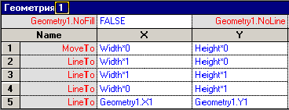
Соответственно один раздел на геометрию и по одному разделу параметров этой фигуры. Если мы создадим штамп сразу из прямоугольников, то получим несколько десятков прямоугольников и сразу заметим, как начнет притормаживать программа при работе с этим штампом. Произойдет это потому, что у нас, предположим, 50 прямоугольников и 50 разделов параметров этих фигур. Но все можно упростить. Если создать, например, 20 фигур и применить к ним команду Присоединение (Фигуры>Операции>Присоединение), то, посмотрев снова в ТаблицуФигур, мы увидим что Разделов Геометрия стало больше, а остальных параметров всего по одному разделу.
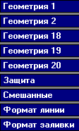
И получившаяся фигуры будет обрабатываться намного быстрее, чем группа созданная из них. По такому принципу и будем уменьшать количество фигур в штампе.
Итак, приступим:
Во-первых, нарисуем большую таблицу будущего штампа, используя наименьшее кол-во фигур:
- Малая сетка, как на рисунке (это 1 объект, составленный и объединенный из 14 линий, а не сгруппированный).
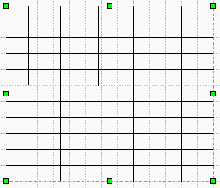
- Основной контур (это 1 объект, состоящий из 1 прямоугольника по контуру и 7 линий)
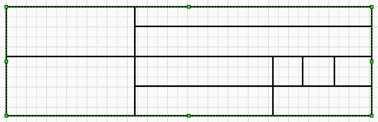
- Надписи (4 объекта. Можно и в 3 сделать, но для удобства лучше 4).
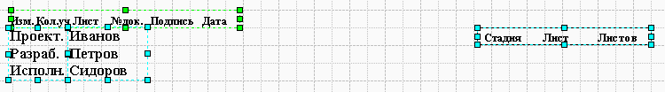
Только с надписями есть одна тонкость, необходимо выставить все отступы на 0 мм и между надписями в фигуре лучше делать пробел размером шрифта 6 ед. Пока получилось 6 объектов.
- Малая боковая таблица (1 надпись и 1 объект, из 1 прямоугольника и 4 линий).
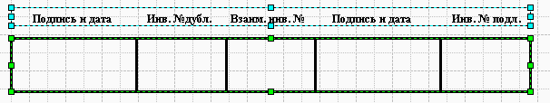
- И последний объект это собственно рамка (1 прямоугольник без заливки).
Вот и все. 8 правильно составленных объектов и весь штамп. Теперь займемся автопозиционированием. Наша рамка будет группой, в силу того, что если она будет мастером в трафарете, то при добавлении на лист эти элементы будут помещаться все равно группой.
Нам необходимо создать 2 группы:
- Группа большой таблицы.
- Группа малой таблицы.
Далее все эти 4 фигуры: Большая Таблица + Малая Таблица + Рамка, располагаем примерно так, как они должны стоять, точность здесь не требуется (малую таблицу необходимо повернуть на 90 градусов) и группируем, далее заходим в ТаблицуФигур получившейся группы. Делаем вставку раздела Ячейки пользователя (В ТаблицеФигур нажать правую кнопку мыши и выбрать>Вставка раздела>Ячейки пользователя) и создать 4 строки с названиями.
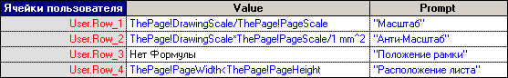
И ввести следующие формулы:
- =ThePage!DrawingScale/ThePage!PageScale
- =ThePage!DrawingScale*ThePage!PageScale/1 mm^2
- Оставить пустым
- =ThePage!PageWidth
Теперь нам необходимо узнать ID данной группы, для этого зайдите в «Специальное…» (Формат>Специальное) и запомните номер ID группы(13-й к примеру), далее он нам понадобится.
С группой пока все. Далее займемся рамкой. Для этого необходимо выделить ее из группы двойным нажатием и вызвать ТаблицуФигур для нее. Далее надо снова создать такие же строки, но написать другое:

- =Sheet.13!User.Row_1
- =Sheet.13!User.Row_2
- =Sheet.13!User.Row_3
- =Sheet.13!User.Row_4
Где вместо 13 впишите свой ID главной группы.
В раздел Трансформация Фигуры, внесите следующие изменения:
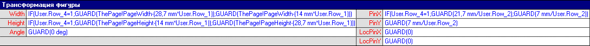
В ячейку Width:
=IF(User.Row_4=1;GUARD(ThePage!PageWidth-(28,7 mm*User.Row_1));GUARD(ThePage!PageWidth-(14 mm*User.Row_1)))
В ячейку Height:
=IF(User.Row_4=1;GUARD(ThePage!PageHeight-(14 mm*User.Row_1));GUARD(ThePage!PageHeight-(28,7 mm*User.Row_1)))
В ячейку Angle:
=GUARD (0 deg)
В ячейку PinX:
=IF(User.Row_4=1;GUARD(21,7 mm/User.Row_2);GUARD(7 mm/User.Row_2))
В ячейку PinY:
=GUARD(7 mm/User.Row_2)
В ячейку LocPinX:
=GUARD(0)
В ячейку LocPinY:
=GUARD(0)
С рамкой все. Далее займемся большой таблицей. Для этого необходимо выделить ее из группы двойным нажатием и вызвать ТаблицуФигур для нее. Далее надо снова создать такие же строки в разделе Ячейки пользователя, и так же заполнить:
- =Sheet.13!User.Row_1
- =Sheet.13!User.Row_2
- =Sheet.13!User.Row_3
- =Sheet.13!User.Row_4
Где вместо 13 впишите свой ID главной группы.
В раздел Трансформация Фигуры этой большой таблицы, внесите следующие изменения:
В ячейку Width:
=GUARD(181,3 mm*User.Row_1)
В ячейку Height:
=GUARD(54,2334 mm*User.Row_1)
В ячейку Angle:
=IF(User.Row_4=1;GUARD(90 deg*User.Row_3);GUARD(-90 deg*User.Row_3))
В ячейку PinX:
=IF(User.Row_4=1;IF(User.Row_3=0;GUARD(ThePage!PageWidth-(7 mm*User.Row_1));GUARD(ThePage!PageWidth-7 mm*User.Row_1));IF(User.Row_3=0;GUARD(ThePage!PageWidth-7 mm*User.Row_1);GUARD(7 mm*User.Row_1)))
В ячейку PinY:
=IF(User.Row_3=0;IF(User.Row_4=0;GUARD(7 mm*User.Row_1);GUARD(7 mm*User.Row_1));IF(User.Row_4=0;GUARD(7 mm*User.Row_1);GUARD(ThePage!PageHeight-7 mm*User.Row_1)))
В ячейку LocPinX:
=GUARD(Width)
В ячейку LocPinY:
=GUARD(0)
С большой таблицей все. Далее займемся малой таблицей. Для этого необходимо выделить ее из группы двойным нажатием и вызвать ТаблицуФигур для нее. Для нее необходимо тоже создать такие же строки в разделе Ячейки пользователя, и так же заполнить:
- =Sheet.13!User.Row_1
- =Sheet.13!User.Row_2
- =Sheet.13!User.Row_3
- =Sheet.13!User.Row_4
Где вместо 13 впишите свой ID главной группы.
В раздел Трансформация Фигуры этой малой таблицы, внесите следующие изменения:
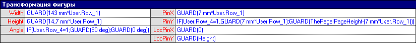
В ячейку Width:
=GUARD(143 mm*User.Row_1)
В ячейку Height:
=GUARD(14,7 mm*User.Row_1)
В ячейку Angle:
=IF(User.Row_4=1;GUARD(90 deg);GUARD(0 deg))
В ячейку PinX:
=GUARD(7 mm*User.Row_1)
В ячейку PinY:
=IF(User.Row_4=1;GUARD(7 mm*User.Row_1);GUARD(ThePage!PageHeight-(7 mm*User.Row_1)))
В ячейку LocPinX:
=GUARD(0)
В ячейку LocPinY:
=GUARD(Height)
Все эти параметры для случая, когда малая таблица создавалась в ширину, группировалась, а потом поворачивалась на 90 градусов.
И наконец внести еще поправки в Главную группу. Для этого ее опять необходимо открыть в ТаблицеФигур и создать раздел Действия (нажать на правую кнопку мыши>Вставка раздела>Действия). Затем заполнить:
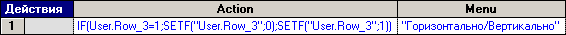
В разделе Трансформация Фигуры Главной группы, внесите следующие изменения:
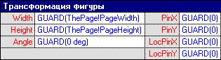
В ячейку Width:
=GUARD(ThePage!PageWidth)
В ячейку Height:
=GUARD(ThePage!PageHeight)
В ячейку Angle:
=GUARD(0 deg)
В ячейку PinX:
=GUARD(0)
В ячейку PinY:
=GUARD(0)
В ячейку LocPinX:
=GUARD(0)
В ячейку LocPinY:
=GUARD(0)
Теперь если выделить нашу рамку и нажать правую кнопку мыши, то мы увидим новое меню, которое и будет менять ориентацию нашей рамки независимо от листа.
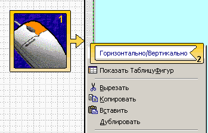
Это очень удобно если необходимо в одном документе чертить листы разной ориентации. Просто поворачиваем нужные страницы(Ctrl+0 и переместить на угол листа), меняем ориентацию рамки и работаем. Теперь тестируем на всех масштабах, поправляем надписи, если где съехали и все. Как можно было заметить у нашей рамки отступ не 5 мм, а 7. Это сделано из-за того, что Visio сам имеет отступ 6,5 мм.
Наша автопозиционирующаяся рамка готова. Всего фигур получилось 12.
Примеры из статьи.
Статьи: 1 2 3 4 5 6 7 8 9 10 11 12 13 14 15 16 17 18 19 20 21 22 23 24 25 26 27 28 29 30
В начало раздела
Автор: Ничков Алексей (a.k.a. Digitall)